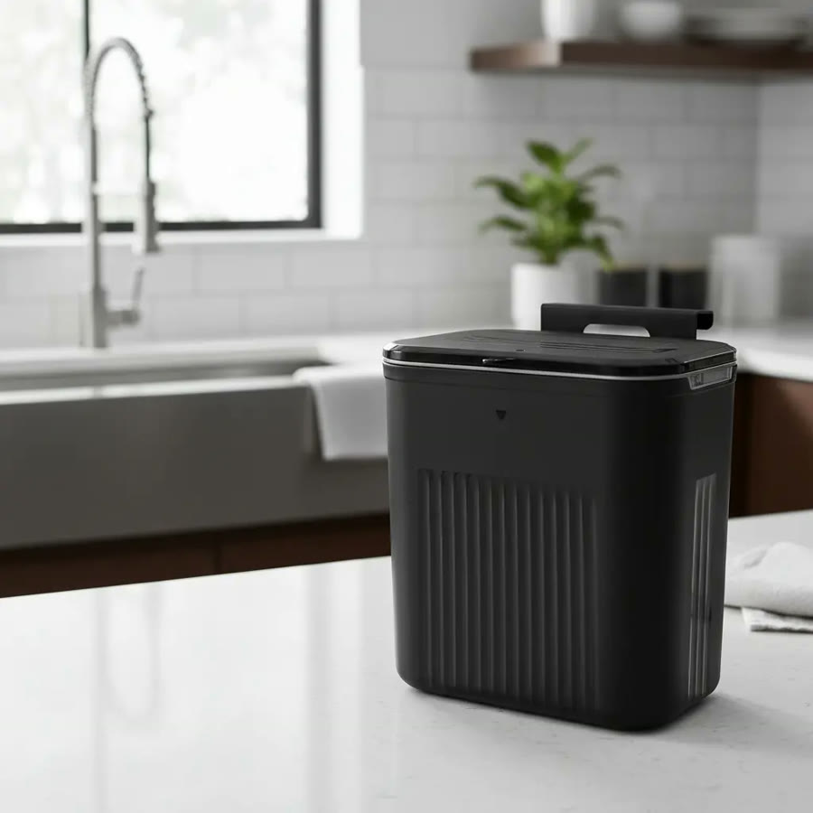
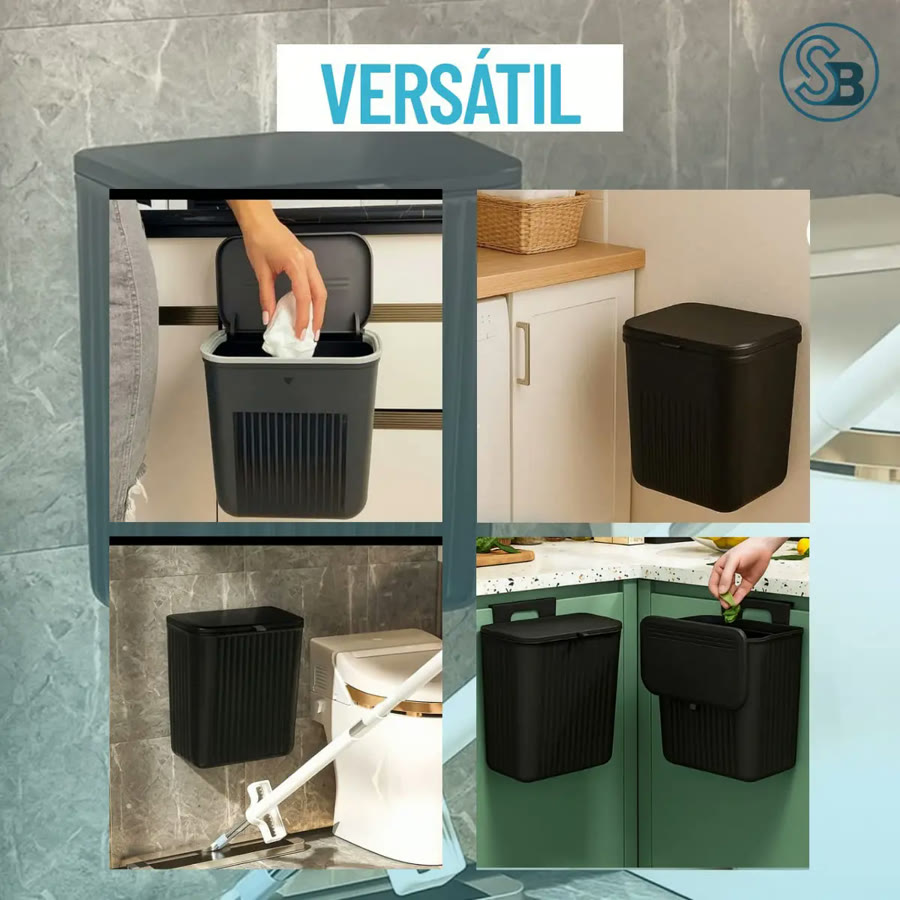
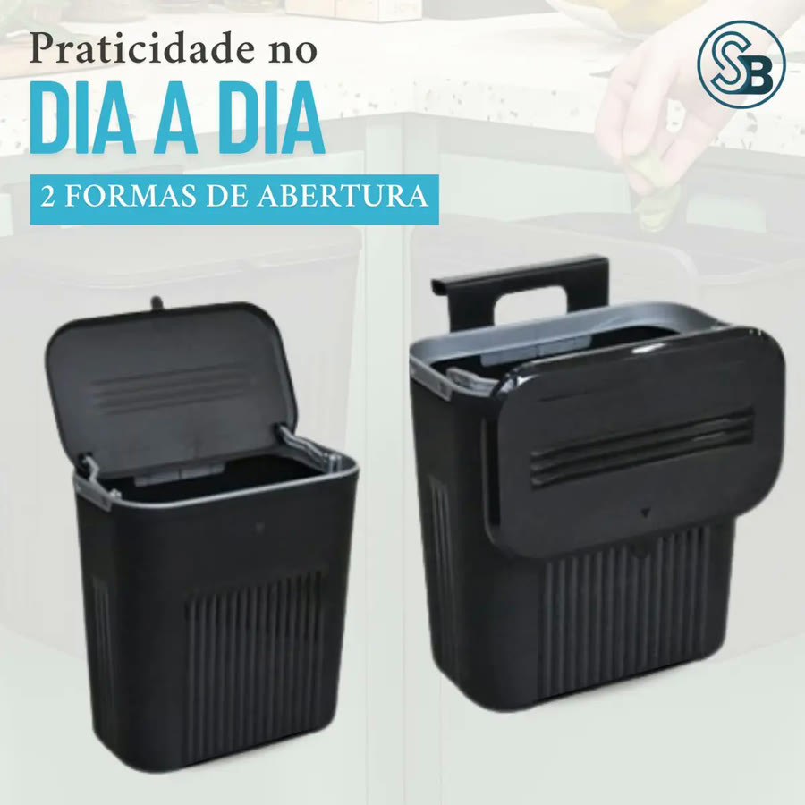
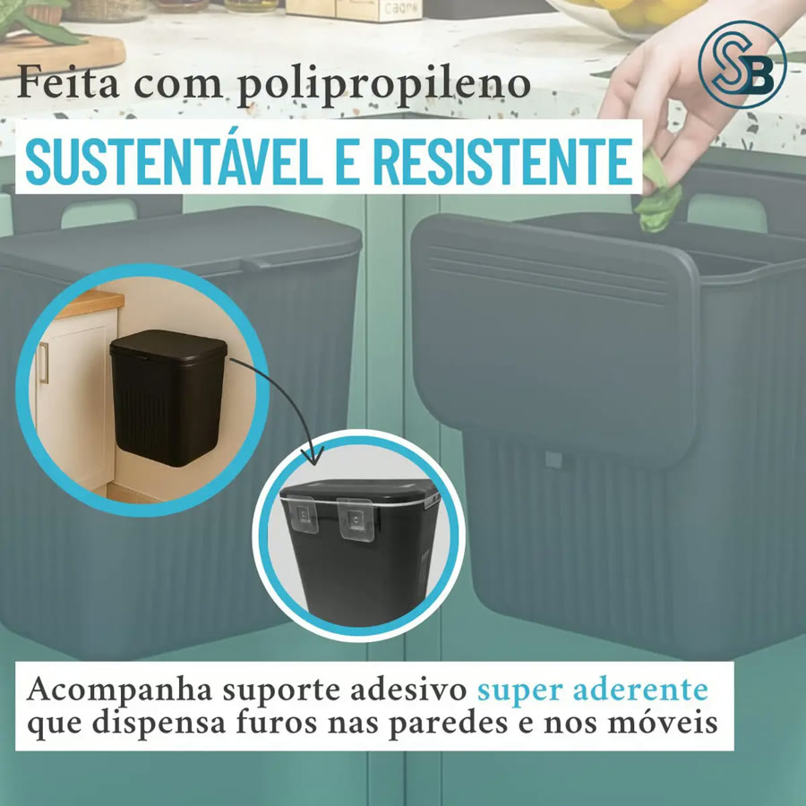
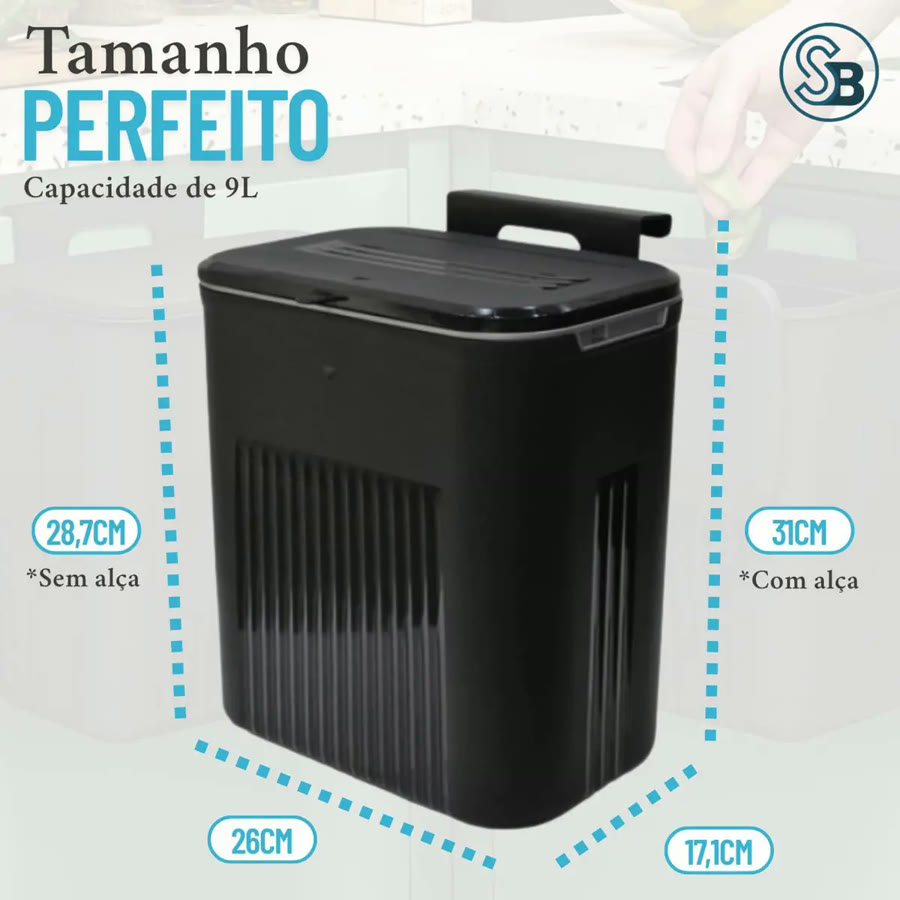

Achado nº 34
Lixeira suspensa 9 L que pendura na porta do armário (com adesivo)






O que diz a página oficial do produto
- Lixeira de 9 litros com tampa, de plástico (polipropileno), na cor preta
- Tem uma alça de encaixe para pendurar na porta do armário, como a porta debaixo da pia
- Também pode ficar na parede ou no chão, segundo a ficha técnica
- Vem com um suporte adesivo para a parede; segundo o anúncio, dispensa furos
- Segundo as fotos do anúncio, a tampa tem 2 formas de abertura
- A abertura é manual, sem sensor
- Segundo o anúncio, limpa com água e sabão
- No Mercado Livre, tem nota 4,8 com mais de 4.500 avaliações e mais de 10 mil vendidos
Link de afiliado: se você comprar por ele, a Achadaria pode receber uma comissão, sem custo extra para você. Preço, estoque e entrega são da loja e podem mudar; confira lá antes de comprar.